Practica 1: Señales en tiempo continuo
Contents
Integrantes:
- España Perez Bryan Uriel - Islas Martinez Cesar - Olivares Quezada Yahdiel
Objetivos:
* Manipulación básica de MATLAB
* Gráficas de señales reales y complejas continuas
* Transformación de señales continuas (escalamientos y traslaciones)
* Calculo de energía y potencia de señales continuas
Introduccion:
Historia de MATLAB MATLAB nace como una solución a la necesidad de mejores y mas poderosas herramientas de calculo para resolver problemas de calculo complejos en los que es necesario aprovechas las amplias capacidades de proceso de datos de grandes computadores. El nombre MATLAB viene de "matrix laboratory" (laboratorio matricial). MATLAB fue originalmente escrito para proveer acceso fácil al software matricial desarrollado por los proyectos LINPACK y EISPACK, que juntos representan el estado del arte e software para computación matricial. Hoy MATLAB es usado en una variedad de áreas de aplicación incluyendo procesamiento de señales e imágenes, diseño de sistemas de control, ingeniería financiera e investigación médica. La arquitectura abierta facilita usar MATLAB y los productos que lo acompañan para explorar datos y crear herramientas personalizadas que proveen visiones profundas empranas y ventajas competitivas.
Otras alternativas:
Octave es un programa y lenguaje de programación para realizar cálculos numéricos. Como su nombre indica, Octave es parte del proyecto GNU. Es considerado el equivalente libre de MATLAB. Entre varias características que comparten, se puede destacar que ambos ofrecen un intérprete, permitiendo ejecutar órdenes en modo interactivo. Nótese que Octave no es un sistema de álgebra computacional, lo es Maxima, sino que está orientado al análisis numérico. El proyecto fue creado alrededor del año 1988, pero con una finalidad diferente: ser utilizado en un curso de diseño de reactores químicos. Posteriormente, en el año 1992, se decidió extenderlo, y comenzó su desarrollo a cargo de John W. Eaton.1 La primera versión alpha fue lanzada el 4 de enero de 1993. Un año más tarde, el 17 de febrero de 1994, apareció la versión 1.0. El nombre surge de Octave Levenspiel, profesor de uno de los autores y conocido por sus buenas aproximaciones, por medio de cálculos elementales, a problemas numéricos en ingeniería química.
Detalles tecnicos: * Octave está escrito en C++ usando la biblioteca STL. * Tiene un intérprete de su propio lenguaje (de sintaxis casi idéntica a Matlab), y permite una ejecución interactiva o por lotes. * Su lenguaje puede ser extendido con funciones y procedimientos, por medio de módulos dinámicos. * Utiliza otros programas GNU para ofrecer al usuario la posibilidad de crear gráficos para luego imprimirlos o guardarlos (Grace). * Dentro del lenguaje también se comporta como una consola de órdenes (shell). Esto permite listar contenidos de directorios, por ejemplo. * Además de correr en plataformas Unix también lo hace en Windows. * Puede cargar archivos con funciones de Matlab (reconocibles por la extensión .m). * Tiene ayuda en español. Fuente: https://es.wikipedia.org/wiki/MATLAB
El lenguaje Octave: * La sintaxis es casi idéntica a la utilizada en MATLAB. * Es un lenguaje interpretado. * No permite pasar argumentos por referencia. Siempre son pasados por valor. * No permite punteros. * Se pueden generar scripts. * Soporta gran parte de las funciones de la biblioteca estándar de C. * Puede ser extendido para ofrecer compatibilidad con las llamadas al sistema UNIX. * El lenguaje está pensado para trabajar con matrices, y provee mucha funcionalidad para trabajar con estas. * Soporta estructuras similares a los "struct"s de C. * Disponde de un entorno de desarrollo integrado y se han desarrollado otros para enseñar a programar, como ToolboX. Al ser su licencia Licencia pública general de GNU, puede ser compartido y utilizado libremente. Fuente: https://es.wikipedia.org/wiki/GNU_Octave
Python: Python es un lenguaje de programación interpretado cuya filosofía hace hincapié en la legibilidad de su código. Se trata de un lenguaje de programación multiparadigma, ya que soporta orientación a objetos, programación imperativa y, en menor medida, programación funcional. Es un lenguaje interpretado, dinámico y multiplataforma. Es administrado por la Python Software Foundation. Posee una licencia de código abierto, denominada Python Software Foundation License,2 que es compatible con la Licencia pública general de GNU a partir de la versión 2.1.1, e incompatible en ciertas versiones anteriores.
Python fue creado a finales de los ochenta3 por Guido van Rossum en el Centro para las Matemáticas y la Informática (CWI, Centrum Wiskunde & Informatica), en los Países Bajos, como un sucesor del lenguaje de programación ABC, capaz de manejar excepciones e interactuar con el sistema operativo Amoeba.4 El nombre del lenguaje proviene de la afición de su creador por los humoristas británicos Monty Python.5 Van Rossum es el principal autor de Python, y su continuo rol central en decidir la dirección de Python es reconocido, refiriéndose a él como Benevolente Dictador Vitalicio (en inglés: Benevolent Dictator for Life, BDFL); sin embargo el 12 de julio de 2018 declinó de dicha situación de honor sin dejar un sucesor o sucesora y con una declaración altisonante.
Python es un lenguaje de programación multiparadigma. Esto significa que más que forzar a los programadores a adoptar un estilo particular de programación, permite varios estilos: programación orientada a objetos, programación imperativa y programación funcional. Otros paradigmas están soportados mediante el uso de extensiones. Python usa tipado dinámico y conteo de referencias para la administración de memoria. Una característica importante de Python es la resolución dinámica de nombres; es decir, lo que enlaza un método y un nombre de variable durante la ejecución del programa (también llamado enlace dinámico de métodos). Otro objetivo del diseño del lenguaje es la facilidad de extensión. Se pueden escribir nuevos módulos fácilmente en C o C++. Python puede incluirse en aplicaciones que necesitan una interfaz programable. Aunque la programación en Python podría considerarse en algunas situaciones hostil a la programación funcional tradicional del Lisp, existen bastantes analogías entre Python y los lenguajes minimalistas de la familia Lisp como puede ser Scheme. Fuente: <https://es.wikipedia.org/wiki/Python>
Desarrollo:
*Problema 1:* Realiza las mismas operaciones que Lathi en las secciones M1.1 a M1.4 que se encuentra al final del capítulo 1 y antes de la sección de problemas, cambie los inline por funciones anonimas.
%M1.1 Inline Functions f = @(t) (exp(-t).* cos(2*pi*t)) f(0) t = (-2:2); f(t) plot(t,f(t), 'Color','b','LineStyle',':'); xlabel('t'); ylabel('f(t)'); grid on; ax = gca; ax.XAxisLocation = 'origin'; ax.YAxisLocation = 'origin'; ax.Box = 'off'; t = (-2:0.01:2); plot(t,f(t),'Color','r','LineStyle','--'); xlabel('t'); ylabel('f(t)'); grid on; ax = gca; ax.XAxisLocation = 'origin'; ax.YAxisLocation = 'origin'; ax.Box = 'off'; % %M1.2 Relational Operators and the Unit Step Function u = @(t) (t>0) t = (-2:2); plot (t,u(t) , 'Color', 'r', "LineStyle","--","LineWidth", 0.7); ax = gca; ax.XAxisLocation = 'origin'; ax.YAxisLocation = 'origin'; ax.Box = 'off'; grid on; xlabel('t'); ylabel('u(t)'); t = (-2:0.01:2); plot (t,u(t), 'Color', 'm', "LineStyle","-","LineWidth", 0.8 ); ax = gca; ax.XAxisLocation = 'origin'; ax.YAxisLocation = 'origin'; ax.Box = 'off'; grid on; xlabel('t'); ylabel('u(t)'); axis ([-2 2 -0.1 1.1]); p = @(t) (t>=0) & (t<1) t = (-1:0.01:2); plot(t,p(t), 'Color','c', "LineStyle","-.", "LineWidth", 0.9); ax = gca; ax.XAxisLocation = 'origin'; ax.YAxisLocation = 'origin'; ax.Box = 'off'; grid on; xlabel('t'); ylabel('p(t) = u(t)-u(t-1)'); axis ([-1 2 -.1 1.1]); % %M1.3 Visualizing Operations on the Independent Variable g = @(t) exp(-t).*cos(2*pi*t).*(t>=0) %g(t) = exp(-t).*cos(2*pi*t).*(t>=0) t = (-2:0.01:2); plot(t,g(2*t+1),'Color', 'r', "LineStyle","-","LineWidth", 1); ax = gca; ax.XAxisLocation = 'origin'; ax.YAxisLocation = 'origin'; ax.Box = 'off'; xlabel('t'); ylabel('g(2t+1)'); grid on; plot(t,g(-t+1), 'Color', 'b', "LineStyle","--","LineWidth", 1.1); ax = gca; ax.XAxisLocation = 'origin'; ax.YAxisLocation = 'origin'; ax.Box = 'off'; xlabel('t'); ylabel('g(-t+1)'); grid on; plot(t,g(2*t+1) +g(-t+1), 'Color', 'm', "LineStyle",":","LineWidth", 1.2); ax = gca; ax.XAxisLocation = 'origin'; ax.YAxisLocation = 'origin'; ax.Box = 'off'; xlabel('t'); ylabel('h(t)'); grid on; % %M1.4 Numerical Integration and Estimating Signal Energy x = @(t) exp(-t).*((t>=0)&(t<1)); t = (0:0.01:1); E_x1 =sum(x(t).*x(t)*0.01); x_squared = @(t) exp(-2*t).*((t>=0)&(t>1)); E_x = integral(x_squared,0,1); g_squared = @(t) exp(-2*t).*(cos(2*pi*t).^2).*(t>=0); t = (0:0.001:100); E_g1 = sum(g_squared(t)*0.001); E_g = integral(g_squared, 0,100); % % *Problema 2:* % Resuelve el problema 1.2.2 usando las herramientas del paso anterior. % % Problema 1.2.2 % Se dividio la figura en dos partes: % - La parte izquierda z = @(t) (-t .* heaviside(t + 4)).*(heaviside(-t)); % - La parte derecha y = @(t) (t .* heaviside(t)) .* (heaviside(-t +2)); % Rango de t t = (-10:0.1:10); % Señal completa original x = @(t) z(t) + y(t); figure % Señal original plot (t, x(t) , 'color', 'c', "LineWidth", 1.5 ); ax = gca; ax.XAxisLocation = 'origin'; ax.YAxisLocation = 'origin'; ax.Box = 'off'; grid on; % a) x(t-4) xa = @(t) (z(t-4) + y(t-4)) ; figure plot (t, xa(t) , 'color', 'g', "LineStyle" , '-' , "LineWidth", 1.5); ax = gca; ax.XAxisLocation = 'origin'; ax.YAxisLocation = 'origin'; ax.Box = 'off'; grid on; % b) x(t/1.5) xb = @(t) (z(t/1.5) + y(t/1.5)) ; figure plot (t, xb(t) , 'color', 'm', "LineStyle" , '--' , "LineWidth", 1.5); ax = gca; ax.XAxisLocation = 'origin'; ax.YAxisLocation = 'origin'; ax.Box = 'off'; grid on; % c) x(-t) xc = @(t) (z(-t) + y(-t)) ; figure plot (t, xc(t) , 'color', 'r' , "LineStyle" , ':', "LineWidth", 1.5); ax = gca; ax.XAxisLocation = 'origin'; ax.YAxisLocation = 'origin'; ax.Box = 'off'; grid on; % d) x(2t - 4) xd = @(t) (z((2.*t)-4) + y((2.*t)-4)) ; figure plot (t, xd(t) , 'color', 'b' , "LineStyle" , ':' , "LineWidth", 1.5); ax = gca; ax.XAxisLocation = 'origin'; ax.YAxisLocation = 'origin'; ax.Box = 'off'; grid on; % e) x(2 - t) xe = @(t) (z(2-t) + y(2-t)) ; figure plot (t, xe(t) , 'color', 'k' , "LineStyle" , '-.' , "LineWidth", 1.5); ax = gca; ax.XAxisLocation = 'origin'; ax.YAxisLocation = 'origin'; ax.Box = 'off'; grid on; figure
f =
function_handle with value:
@(t)(exp(-t).*cos(2*pi*t))
ans =
1
ans =
7.3891 2.7183 1.0000 0.3679 0.1353
u =
function_handle with value:
@(t)(t>0)
p =
function_handle with value:
@(t)(t>=0)&(t<1)
g =
function_handle with value:
@(t)exp(-t).*cos(2*pi*t).*(t>=0)
Problema 3: Construya una función que gráfique funciones de 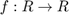 en el formato de su elección y pruebe su código para mostrar las gráficas de magnitud y fase para las fórmulas 1, 2 y 3 de la tabla que se encuentra en al sección de tranformada de Fourier de la siguiente página http://rafneta.github.io/Notas/NotasSyS/index.html con valores de a=1/2 y n = 2. El rango de la varible se deja a criterio.
Tomando en cuenta
a=1/2; n=2; t=-10:0.01:10;
Formula 1
La formula n° 1 es exp(-at)u(t) la cual se expresa como:
f1=@(t) exp(-a*t).*(t>=0);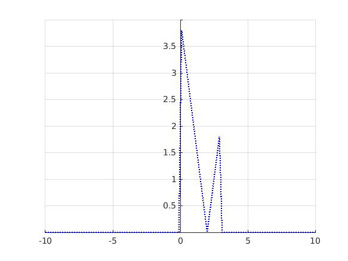
Su transformada de Fourier es:
F1=@(w) 1./(w*j+a);
Por lo que las graficas de la formula 1 junto con las de magnitud y fase de su transformada de Fourier son respectivamente
Grafica(t,f1(t))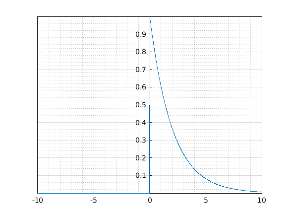
Grafica(t,abs(F1(t)))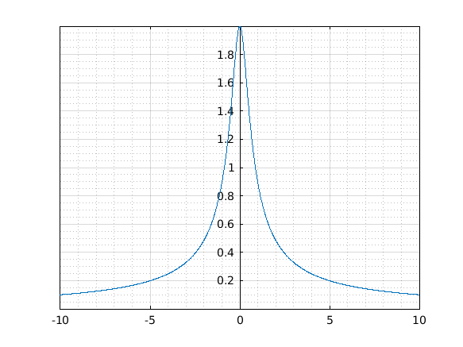
Grafica(t,angle(F1(t)))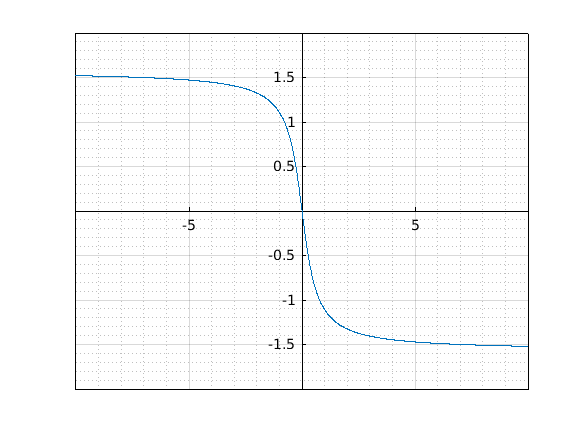
Formula 2
La formula n° 1 es exp(-at)u(t) la cual se expresa como:
f2=@(t) t.*exp(-a*t).*(t>=0);
Su transformada de Fourier es:
F2=@(w) 1./(w*j+a).^2;
Por lo que las graficas de la formula 1 junto con las de magnitud y fase de su transformada de Fourier son respectivamente
Grafica(t,f2(t))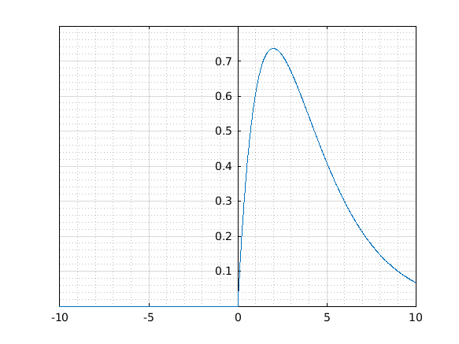
Grafica(t,abs(F2(t)))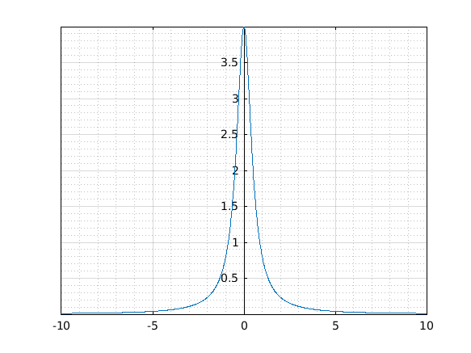
Grafica(t,angle(F2(t)))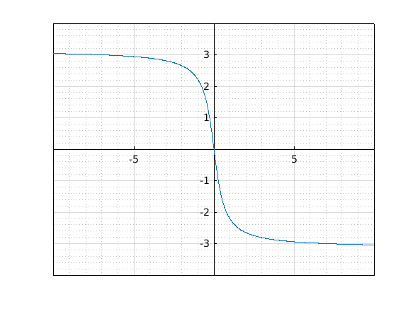
Formula 3
La formula n° 1 es exp(-at)u(t) la cual se expresa como:
f3=@(t) (t.^n).*exp(-a*t).*(t>0);
Su transformada de Fourier es:
F3=@(w) factorial(n)./(w*j+a).^(n+1);
Por lo que las graficas de la formula 1 junto con las de magnitud y fase de su transformada de Fourier son respectivamente
Grafica(t,f3(t))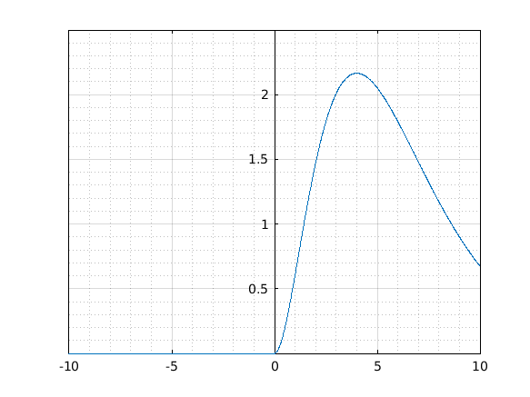
Grafica(t,abs(F3(t)))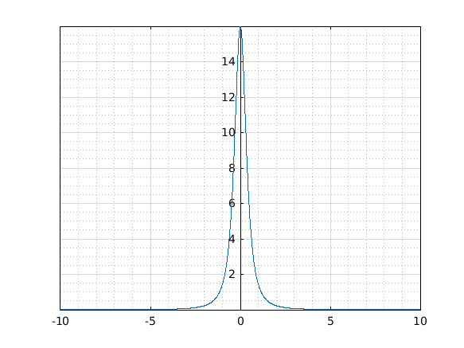
Grafica(t,angle(F3(t)))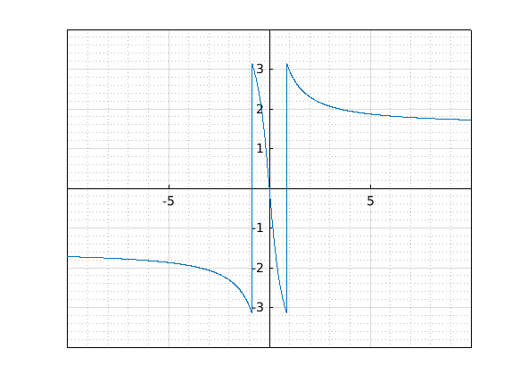
Problema 4: Construya una función que gráfique funciones de 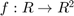 en el formato de su elección y pruebe su código para mostrar las gráficas de las fórmulas 1, 2 y 3 de la tabla que se encuentra en al sección de tranformada de Fourier de la siguiente página http://rafneta.github.io/Notas/NotasSyS/index.html con valores de a=1/2 y n = 2. El rango de la varible se deja a criterio.
Para el desarrollo de esta seccion se utilizaran las funciones F1, F2, F3 que ya se declararon en el Problema 3, funciones cuyas graficas son las siguientes respectivamente:
Grafica3D(t,real(F1(t)),imag(F1(t)))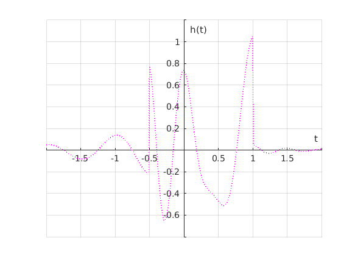 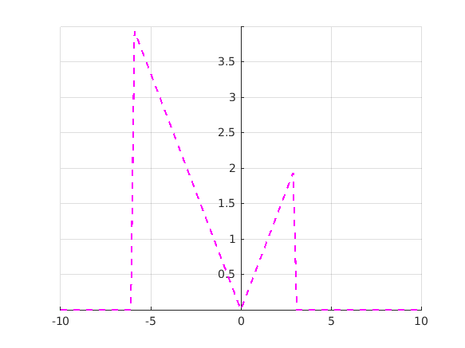 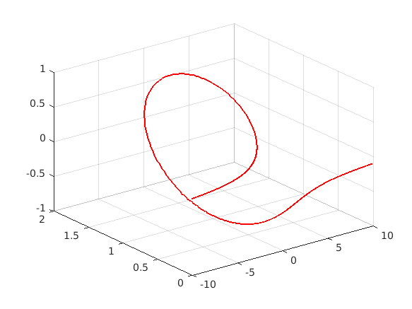
Grafica3D(t,real(F2(t)),imag(F2(t)))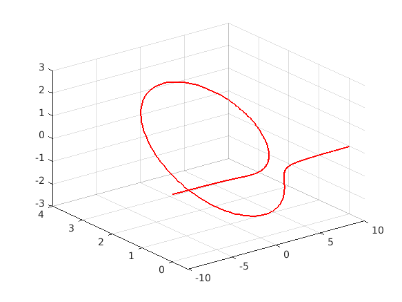
Grafica3D(t,real(F3(t)),imag(F3(t)))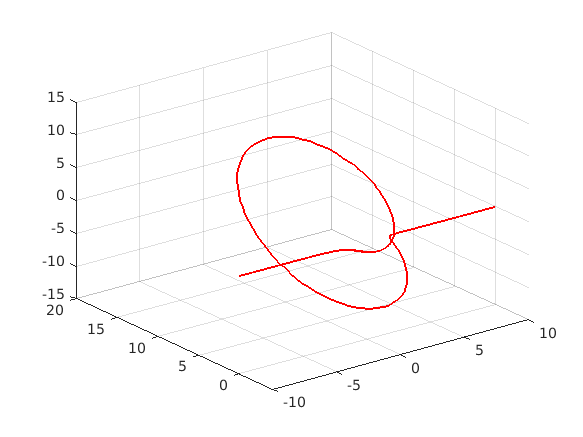
Problema 5: Construya una app que permita - Gráficar señales en tiempo continuo reales, el usuario ingresa la definición de la señal en el formato especifico - El usuario puede definir el intervalo de la gráfica - El usuario puede seleccionar el tipo de transformación (horizontal, vertical o combinación) que desee realizar a la señal, la app debera mostrar la grafica de esta transformación. Puede consultar los ejemplos preconstruidos que le puedan ser de utilidad. - Se adjunta una imagen de la app a la práctica, un enlace a la app en MATLAB online (drive), y el archivo de la app